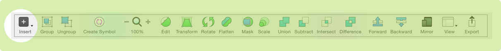
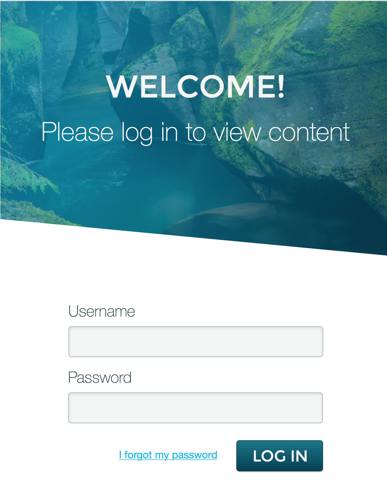
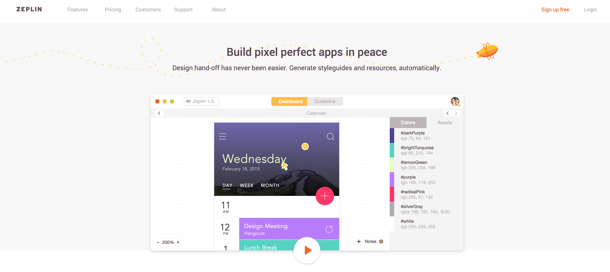

Introduction to Sketch 3
Introduction to Sketch 3
About Cojo
- Designing & Coding for the Internet since 1998
- Senior Designoper at DataStax
- Founder of Girl Develop It Boulder/Denver
- hi@cojorado.com
- @cojorado
Slides
View these slides online at: cara-jo.github.io/teaching-materials/
What is Sketch?
- Easy to use digital design tool that is relatively new to the design community
- Affordable alternative to the more expensive Adobe design products
- Vector based tool for visual designers
- Makes it easy to turn design files into fully functional sites
What we will be covering in this workshop
- Sketch Interface
- Creating & Moving Shapes
- Layer & Text Styling
- Vectors
- Symbols
- Exporting
- Collaborating
- Tools & Resources
Downloading Sketch
Sketch is a Mac OS X only application that requires OS X 10.9 and above.
Sketch offers a free 30 day trial on the Bohemian Coding website.
Go to bohemiancoding.com/sketch/ and download the free trial
To purchase the full version you can either buy it on this website or through the Apple App Store
Interface
Interface
The Sketch UI (User Interface) is comprised of 4 sections
- The Tool-bar
- Layers Panel
- Inspector
- An infinite canvas
Interface
Tool-bar
- Contains all the tools to make a design
- Can be customized by right clicking on it and adding or removing items you don’t need.
Tool-bar » Insert
- Anything you select from this menu can be drawn on the canvas
- Each new shape you draw creates a new layer
- Building blocks of the design - manipulating and combining these elements will create a design
- Once you draw a shape - a lot more tools on the tool-bar become active

Tool-bar » Group/Ungroup
- Group & Ungroup are used to keep your document organized

Tool-bar » Create Symbol
- New tool introduced in the latest version of Sketch
- Allows you to create reusable design elements

Tool-bar » Zoom
- Zoom in and out of your document
- Optionally use
command +orcommand -

Tool-bar » Edit Controls
- Edit: allows you to edit the individual points of a vector shape
- Transform: allows you to asymmetrically transform or skew a shape
- Rotate: rotate your element
- Flatten: turn your vector shape into a raster shape
- Mask: clips images and vector shapes
- Scale: resize elements

Tool-bar » Boolean Operations
- Allows you to combine, or subtract elements of multiple vector shapes to create complex shapes.

Tool-bar » Forward & backward
- Used to rearrange the order of layers.

Tool-bar » Mirror, View, & Export
- Mirror: displays your design on a mobile device that has the mirror app installed
- View: turn on guides, grids & rulers
- Export: export your image to a range of file formats

Creating & Moving Objects
Where Layers Live
Layers live on the Canvas
To organize your layers you can create Artboards - which are fixed frames in your infinite canvas.
- To create a new Artboard go to
insert > Artboardor hit theAkey. - Many pre-defined dimensions show up for different device dimensions
To organize your Artboards you can place them on different pages.
- To create a new page click the
+arrow on the pages panel within your layers panel.
You might have to expand this panel by clicking the arrow next to the pages title
Creating Layers
- Add shapes from the tool-bar
- Import images by dragging and dropping them onto the canvas
- Use the vector tool to draw a custom shape
- Insert text with the text tool
Selecting Layers
Two ways to select layers to manipulate them
- Select layers in the layer panel by clicking their name
-
Select layers by clicking on them in the canvas.
- Select multiple layers by holding down the shift key
- Selected layers will have a blue outline around to indicate that they are selected
Resizing Layers
- When a layer is selected handles will appear on it’s corners
- Clicking and dragging
- To keep aspect ratio hold down shift while dragging
Resizing with the Inspector
The Inspector contains all the information about your shape
Height, Width, Position, Rotation, etc.
Change these values and hit enter to see how your shape changes.
To maintain the aspect ratio click the lock icon.
Moving Layers
- Simply click and drag a layer around the canvas to move it.
Use the arrow keys to move it one pixel at a time.
- Hold down the shift key while using the arrow keys to move the shape in increments of 10 pixels
- Use the inspector to move it to a precise location on the canvas.
Duplicating Layers
command+Dto duplicate a layer in it’s place- Right click on the layer and select 'Duplicate'.
Duplicated layers are placed on top of the previous layer, so it won’t appear as if anything has changed right away.
Creating Complex Shapes
Using the Boolean Operations we can combine multiple shapes together, to create a more complex one
- Draw two or more shapes on the canvas.
- Overlap them slightly
-
Notice that our Boolean tools are now highlighted - which means we can use them
- Union: Clicking this will make the shapes become one
- Subtract: Removes the top layer from the bottom layer
- Intersect: Removes the fill from the areas that are NOT overlapping
- Difference: Removes the fill from the areas that ARE overlapping
Layer & Text Styling
The Inspector!
The Inspector is where all the layer properties are defined.
- Color fill, gradients, textures
- Border color, width, style, radius
- Shadows & blur
Changing the Color
- Select a layer to change it’s properties
-
Click on the color icon under the fill section
- Select either a flat color, gradient or texture
- Adjust the opacity of the color
Get Crazy:
- Click the
+icon to add another fill type on top of this one
Modify the Border
- Change the color of the border in a similar manner to the shape fill
- Make it dashed or dotted by clicking the cog icon
Add Shadows
- Add a drop shadow by clicking the
+icon - Adjust the color, blur, spread, angle, and opacity of the shadow
- Create an inner shadow by doing the same as above, but in the inner shadow section
You can have multiple types of shadows on a shape!
Styling Text
To style text - many of the same things apply, except of course gradients
- Fill, Border
- Shadows, Blur
Text only things are also available:
- Font Size, family, size
- Text Color
- Alignment
- Underline, strike-through, etc.
Vectors
What is a Vector?
A Vector is a mathematical description of a geometric shape. This includes the thickness of the line, fill color and other attributes that can be expressed mathematically.
Why are Vectors awesome?
They are infinitively scalable and do not degrade as you increase or decrease their size.
They also can be used as a SVG (Scalable Vector Graphic) on the web to allow users to see high quality graphics.
They are not to be used for images like photographs.
Tools to create vectors with
- Line Tool: used to draw lines in your documents
- Arrow Tool: used like the line tool, but will have an arrow applied to the end point
- Rectangle Tool: is used frequently and can be accessed by pressing the
Rkey - Oval Tool: behaves the same way as the Rectangle Tool and can be accessed by pressing the
Okey - Pen (Vector) Tool: allows you to create vector shapes from scratch, point-by-point and can be accessed by pressing the
Vkey
All new shapes you create with Sketch are Vectors by default.
Modify the shape of shapes
- Double click on the shape and you will see a new set of points appear
- You will notice your cursor has changed to the pen tool
- Try dragging these points around to see how they modify your shape
-
Add points by clicking on the edge of the shape where you would like to add one. You will notice the cursor changes to the pen with a
+next to it. -
Remove points by clicking on the point you would like to remove and then hitting the
deletekey
Modify the points' curve
Clicking on a point gives us new options in the inspector
- Mirrored: Default point type. The two curve handles are an equal distance from the point.
- Asymmetric: Both handles will move as you adjust the angle. But you can now make the distance of the handles from the points independent to each other.
- Disconnected: Allows you to adjust them independently.
- Straight: Removes all curves from the point.
Demo: Login Screen
Creating a login screen
- Image background with color overlay
- Headline
- Text Boxes with labels
- Submit button
- Link to forgot password form
Creating a login screen

Symbols & Shared Text Styles
Symbols
Symbols are a great way to create reusable assets for your design.
If you find yourself using the same design element over and over again, it might be a good idea to create a symbol!
Creating & Modifying a Symbol
-
Once you have created something you’d like to reuse, just click the
create symbolbutton on the tool-bar -
It will now be available in the
symboldropdown menu - When inserted the symbol will have a purple colored icon in the layers window and outline on the canvas. (regular elements are outlined in blue)
Symbols cannot contain other symbols
If you want to change an attribute for your symbol, it will automatically be updated for all other symbols.
Text Styles
Over time you will notice that you want all your headlines to be the same font, size, and color. It’s really easy to do this if you create a shared text style.
Creating & Modifying Text Styles
-
Once you have created a block of text you would like to reuse, click the
create new text styleoption in the inspector - It will now be available in the text styles drop down so you can apply it to text blocks.
- If you want to change the text style, just change any attribute of it and it will change globally for all text that has that style applied to it.
Exporting for the Web
Exporting
Once you’re done with your design you’ll want to export parts of it for the web.
A few ways to export our elements:
- Slices: Exports all elements contained in the selected area
- Single Layers: Only exports the selected layer and nothing below or above it
- Entire Artboard: Exports everything on the selected artboard - great for showing the entire design to someone
- CSS Styles: Exports the selected element’s CSS styles to your clipboard to use in a stylesheet.
Slices
Access the slice tool by either using the insert menu or hitting the S key.
- Click & drag on your canvas to select the area you would like to export.
- Modify the size or location by clicking and dragging it
- Use the inspector to change the file type & transparency of the exported image.
When you’re ready - click the export icon in the tool-bar
Single Layers
To export a single layer or group, make sure that all the elements you’d like to export are in a group.
- Click on the group or layer you would like to export
-
In the inspector click the
+icon underMake Exportable - Use the inspector to change the file type & transparency of the exported image.
When you’re ready - click the export icon in the tool-bar
Entire Artboard
- Click on title of the artboard you would like to export in the layers menu.
-
In the inspector click the
+icon underExport - Use the inspector to change the file type & transparency of the exported image.
When you’re ready - click the export icon in the tool-bar
CSS Styles
- Select the shape or text layer you would like to export the styles for.
-
Right click on it and select
Copy CSS Attributes - Paste them into your text editor
Make sure you put it inside the curly brackets and give it an ID or a Class or it will not work.
Collaborating
Collaborating with Zeplin

Collaborating with Zeplin
There is no easy way to collaborate with a developer if they don’t have Sketch installed.
Instead of making them download a $99 program, using Zeplin will allow you to send over design assets, colors, font sizes, etc. to your developer.
Using the built in comments feature allows you to leave notes on functionality.
Using Zeplin
- Sign up for an account at zeplin.io and download the mac app
- Download the Sketch plugin
- Export your artboard to Zeplin
- Optional: Create assets using the 'Single Layers' export. They will automatically show up in Zeplin. == Tools & Resources
Tools & Resources
- Sketch App Resources: List of free sketch templates/icons/kits to download and use with Sketch
- Zeplin.io: Collaboration Tool
- Sketch Plugins Listed on GitHub: Large list of plugins with links to their GitHub Repositories
- Sketch Keyboard Shortcuts: A list of keyboard shortcuts used in Sketch
UI Kits
Fonts & Icons
- dafont: Huge collection of free fonts for you to use in your project
- Entypo icon set: Collection of vector icons to use in your project. The .EPS file imports easily into Sketch
- Noun Project: Massive collection of icons to represent almost anything.
/